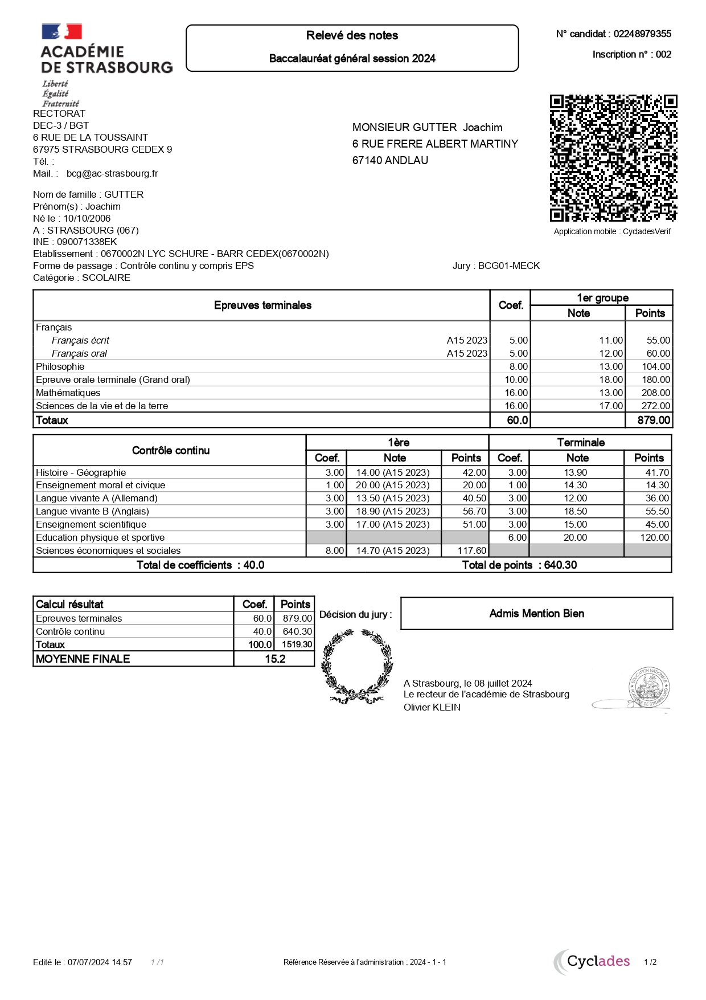

Joachim GUTTER
Student in BUT Network & Telecommunications | Passionate about IT
Address: 67140, Barr
Email: joachimgutter@gmail.com
Student in BUT Network & Telecommunications | Passionate about IT
Address: 67140, Barr
Email: joachimgutter@gmail.com
The BUT Networks and Telecommunications (RT) is a three-year program (Bachelor of Technology) that prepares students for careers in the fields of computer networks, telecommunications, and cybersecurity. It is offered in University Institutes of Technology (IUT) and combines theory, practice, and professionalization.
Acquire technical skills in the design, deployment, administration, and security of network and telecom infrastructures. Master modern tools and technologies: routing, switching, Wi-Fi, cloud, IoT, virtualization, cybersecurity, etc. Develop versatility to adapt to a constantly evolving sector. Prepare for rapid professional integration while allowing for further studies (engineering schools, master's degrees, etc.).
Computer networks:
Design and implementation of network architectures. Protocols (TCP/IP, DNS, DHCP). Network security (firewalls, VPNs, access management).
Telecommunications:
Mobile technologies (4G, 5G). Fiber optics and wired networks. VoIP (voice over IP) and unified communications.
Cybersecurity:
Prevention of cyberattacks. Incident management. Cryptography and data protection.
Programming and automation:
Common languages: Python, Bash scripts, etc. Automation of network tasks (SDN, Ansible).
Cloud computing and IoT (Internet of Things):
Virtualization and server management. Deployment of applications in the cloud. Connectivity of smart objects.
Theoretical courses: To understand fundamental concepts. Practical work (TP): Situational training on real equipment (routers, switches, etc.). Tutored projects: Development of concrete projects in groups. Internships in companies: Minimum of 22 weeks spread over three years.
Network administrator. Telecommunications technician. Cybersecurity engineer (with further studies). Network architect. IoT or cloud technician. Graduates can work in telecommunications companies, IT service companies, or any sector using IT infrastructures.
Specialized engineering schools. Master's degrees in computer science, cybersecurity, telecommunications. Professional certifications (Cisco, AWS, Microsoft, etc.). Required qualities: Analytical and logical mindset. Interest in new technologies. Curiosity and adaptability in evolving environments. This program is ideal for those who wish to combine technical expertise with diverse opportunities in the job market.
Diploma obtained: at Barr at Lycée Schuré
{kind=link}